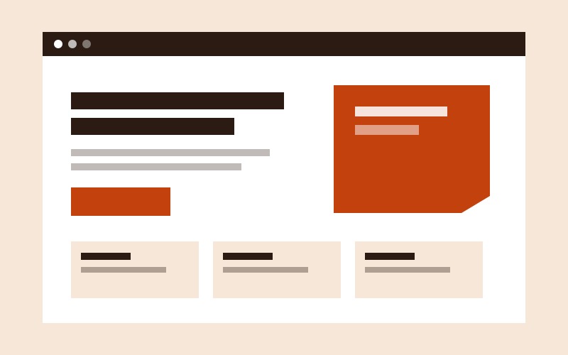
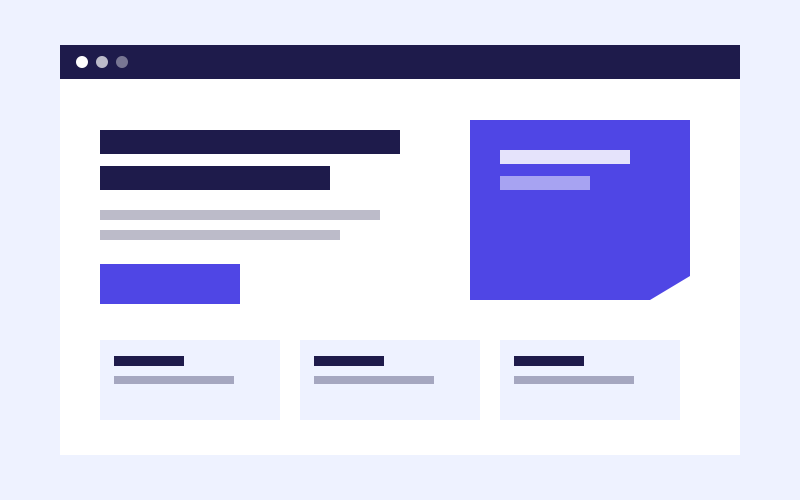
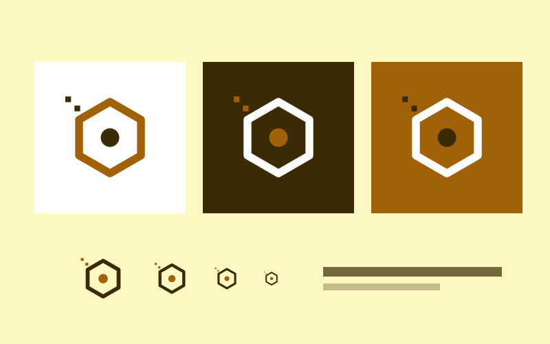
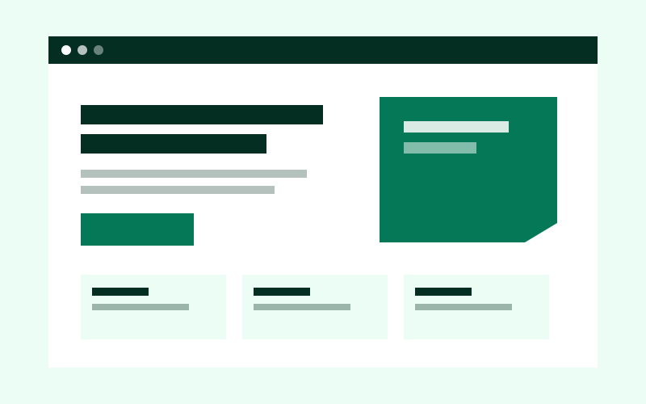
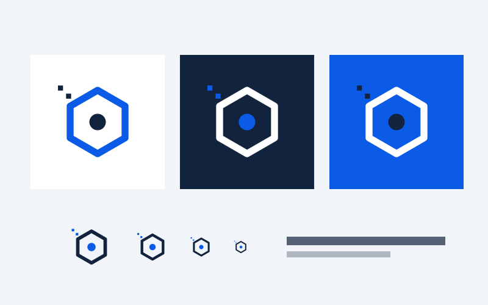

Landing pageCafé Brasa
Landing de una cafetería de barrio.
- Tipo: proyecto de práctica con marca ficticia.
- Objetivo: mostrar el menú y recibir pedidos por mensaje.
- Aprendí: un solo botón principal ordena toda la página.
Proyectos de práctica con marcas ficticias. Cada uno me ayudó a probar una idea de diseño.

Landing pageLanding de una cafetería de barrio.
Logo para una tienda de bicicletas.

Landing pageLanding para clases de apoyo universitario.

LogoLogo para una panadería artesanal.

Landing pageLanding para un estudio de yoga.

LogoLogo para un grupo de estudio de programación.